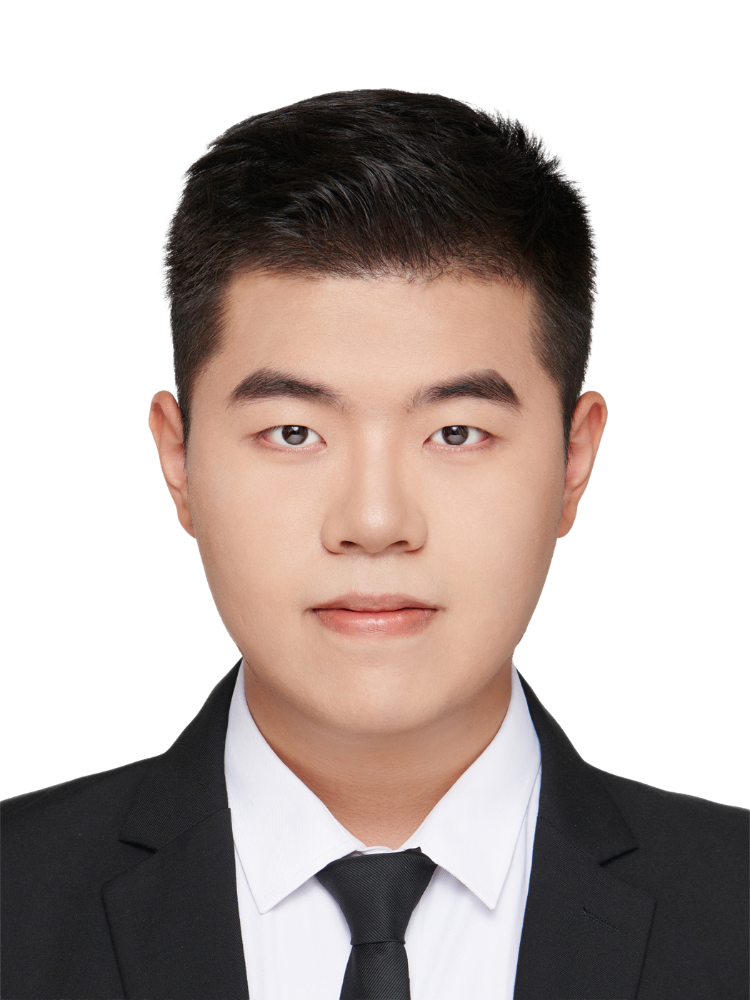

短片 / 01
项目被砍后，
我在湖边遇到了苏东坡？
我在湖边遇到了苏东坡？

明明都是一个人、一个景、几盏灯，甚至说的内容也差不多，但最后呈现出来的感觉，却可能完全不一样。
有的画面只是把人和景照亮了；但有的画面会让你感觉，这个人真的属于这个空间。他的脸、眼神、坐姿、身后的背景、桌上的物件、光线落下来的方式，都在一起帮助他说话。观众未必能说清楚哪里好，但会自然地觉得：这个人是可信的，这段表达是值得继续听下去的。
这也是我想应聘影视飓风摄影师（Talking 方向）实习生的原因。口播和访谈不是"简单地拍人说话"，而是一种非常考验基础判断的影像类型。它没有复杂的场面调度，也没有大量的运动镜头。镜头一架，灯一打，所有东西都会变得很诚实：人物有没有状态，光线干不干净，背景有没有层次，画面是不是有质感，观众能不能相信这个正在说话的人。
影视飓风的 Talking 内容之所以好看，不只是因为设备好、画面清楚，而是它常常能把"专业感"和"亲近感"同时做出来。很多视频的画面并不是单纯追求亮、锐、干净，而是有明确的空间关系、人物气质和内容语境。科技类内容需要专业感、精确感和信息密度；人物访谈需要亲近感和真实的交流状态。而一个好的摄影师要做的，不只是把画面拍漂亮，而是理解这期内容到底应该长成什么样。
把鼠标按在光源上，拖动它。或者按下面的预设按钮，看看四种气质的画面是怎么从同一个人身上长出来的。
我最近系统看了一些关于专业访谈、新闻采访和人物肖像拍摄的资料。看得越多，我越觉得布光不是把灯摆成某种"标准答案"，而是在不断解决一个具体问题：怎么让人物、空间和表达在画面里形成一个整体。
主光决定这个人的脸怎样被看见。它从哪里来，是硬一点还是柔一点，高一点还是低一点，都会改变人物的气质。辅光不是为了把所有阴影抹掉，而是让阴影变得可控。没有阴影，人会变平；阴影太重，信息又会丢失。轮廓光和逆光的作用，是把人物从背景里分离出来，让画面有前后关系。背景光、道具光和环境光则像是群众演员，它们不一定抢眼，但会告诉观众：这是一个什么样的空间，这个人处在什么样的语境里。
它可能只是眼睛里一个很小的亮点，但有和没有，人的状态会差很多。它不是简单地"把眼睛照亮"，而是让观众感觉这个人是清醒的、鲜活的、正在和你交流的。很多时候，人物的可信度和亲近感，就藏在这些很小的细节里。
把鼠标移到上面那双眼睛附近——那个跟着你移动的小亮点，就是眼神光。
窗外自然光可能一直在变，LED 屏幕的色温可能不稳定，背景可能有摩尔纹，房间可能太小，灯位也不一定能架到最舒服的位置。还有一个很现实的问题：灯光不只是给机器看的，也是给被拍摄的人看的。如果画面很好看，但出镜的人被照得睁不开眼，表达状态被破坏，那也是失败的布光。
摄影师不能只盯着监视器，也要观察现场的人。主光的高度、侧光的角度、光比的控制、灯具和人物之间的距离，都不只是技术参数，它们也会影响被拍摄者的状态。尤其是口播和访谈，人物表达本身就是画面的核心。摄影师要做的，是在画面效果、现场效率和出镜者舒适度之间找到平衡。
过去我作为导演、摄影和剪辑，完整参与过多部故事短片、微党课、MV、活动记录等视频的制作。故事短片训练了我对人物状态、空间关系、镜头组织和情绪节奏的判断；宣传片和活动记录则让我更习惯在有限时间、有限场地和有限设备条件下完成拍摄任务。很多时候，现场条件并不理想，但也正是这些限制，让我开始意识到：摄影不是等一切都准备好之后再按下录制键，而是在不完美的现场里，尽可能做出准确、稳定、有效的画面判断。
相比故事短片里更外显的调度，Talking 更像是在一个相对克制的空间里做细节控制。它不靠复杂运动吸引注意力，而是靠人物状态、光线质感、背景层次和整体气质留住观众。对我来说，这不是从零开始进入一个陌生领域，而是把我过去在短片创作中积累的导演意识、摄影意识和剪辑意识，进一步集中到人物表达和空间塑造上。
我觉得故事短片给了我一个很好的基础：它让我习惯从内容出发，而不是从设备出发；从人物状态出发，而不是只看参数；从观众感受出发，而不是只追求画面表面上的精致。现在我想做的，是把这些经验更系统地转向口播和访谈类拍摄，去学习如何在更高标准的团队和流程里，把一个人物、一段表达和一个空间真正组织成一套成熟的 Talking 画面。
我的优势在于，我不是只从器材或参数理解影像，而是习惯从内容出发。一个好的 Talking 画面，既要有干净的曝光、准确的色彩和稳定的布光，也要知道这个人物适合什么样的光，这个背景应该提供多少信息，这个空间要不要有温度，观众看到这个画面时会不会愿意继续听下去。过去的故事短片创作让我习惯从人物、情绪、节奏和信息接收出发，而这些，也正是 Talking 摄影关注的东西。
所以我想加入影视飓风，并不只是因为热爱，而是因为它确实影响了我拍视频的方式。我希望进入一个对画面标准、现场流程和内容表达都有高要求的环境，把我过去拍短片时积累的导演意识、摄影判断和内容理解，真正放进影视飓风的工作流里。
下面是我之前参与制作的几支短片。它们不是 Talking 摄影，但都是"用画面把一个想法讲清楚"的练习——节奏、光线、人物气质、信息密度。我希望把这些经验带进 Talking 摄影中。
Talking 看起来很简单，
却藏着无数细小的判断。
观众未必会意识到这些选择的存在，
但正是这些看不见的选择，
让镜头前的人被更好地看见。